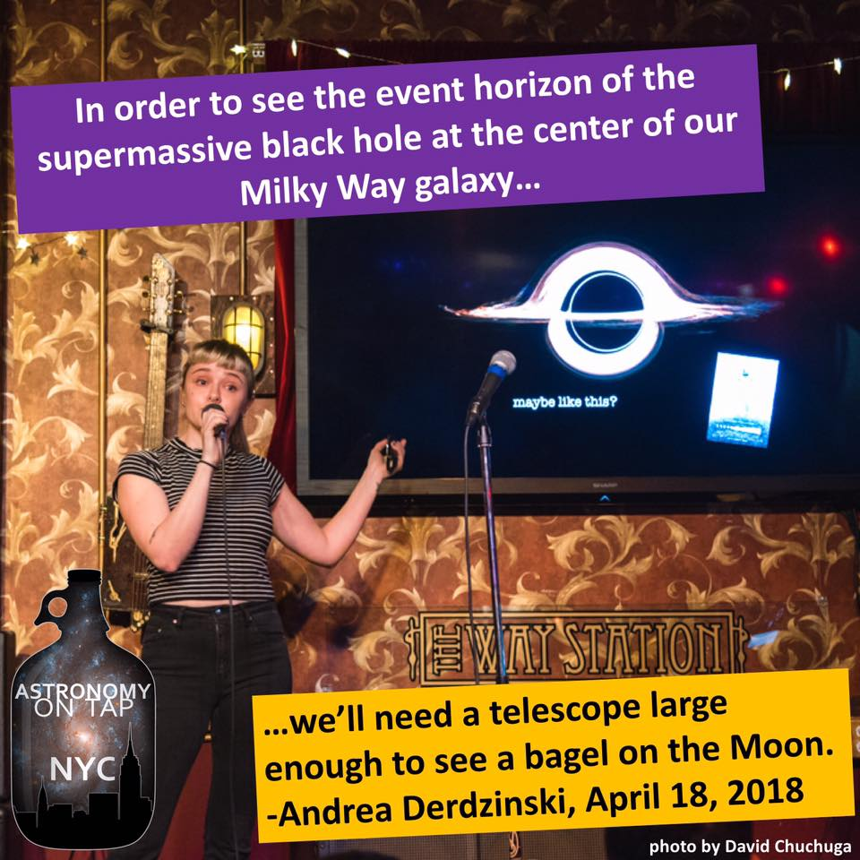
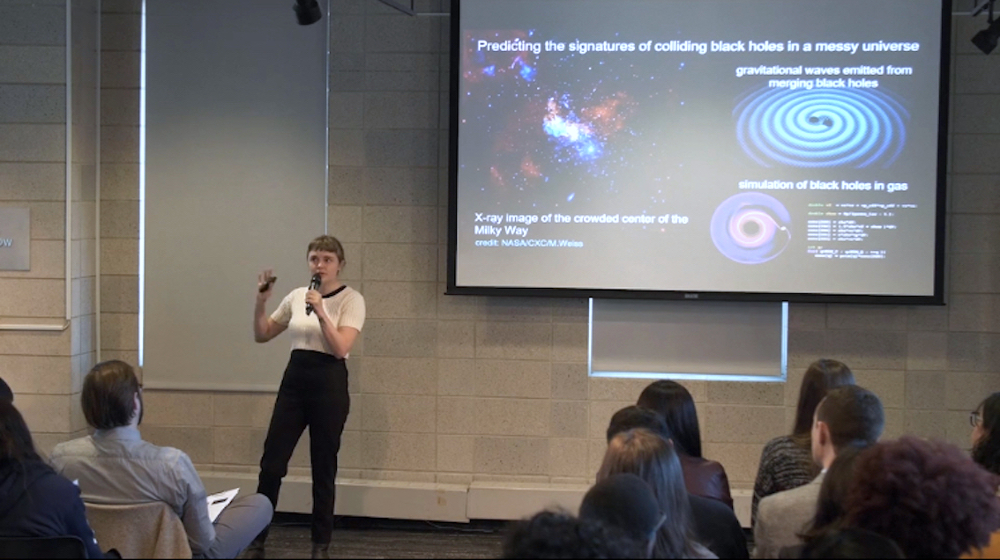

I have experience speaking to a broad range of audiences (from professional to general public) on topics ranging from gravitational waves to cool solar system missions (e.g. with Astronomy on Tap NYC and the Columbia Astronomy Outreach program). I like to participate in events that encourage youth involvement in science, such as "Meet the Scientist" at the Intrepid Museum's annual Kid's Week.

Whether or not we are drinking beer, astronomy is always more approachable with analogies. *and yes, technically we see the shadow...

In 2018 I was a finalist in the international 3-Minute Thesis Competition. It turns out that 3 minutes is enough time to explain 5 years of brainstorming, reading, coding, debugging, analyzing, procrastinating, and writing a 100+ page dissertation.